La ficha de cada paciente, en la nube y solo para su cuidador. Android en Java con Firebase Authentication y Cloud Firestore.
Remedios, presión y contacto de emergencia anotados en papel. Si el cuaderno se pierde, se pierde la historia del paciente y nadie más puede consultarla.
Cada cuidador entra con su cuenta, registra a sus pacientes y anota su control diario. Los datos quedan en Firestore y solo los ve quien los creó.
Muestra el formulario, la lista y los mensajes. No habla con Firebase.
Valida los datos y expone el resultado con LiveData.
Única clase que llama a Auth y Firestore.
Authentication: cuentas y sesión.
Firestore: pacientes y registros.
// app/build.gradle.ktsimplementation(platform(libs.firebase.bom)) // 35.2.0implementation(libs.firebase.auth)implementation(libs.firebase.firestore)
FirebaseAuth auth = FirebaseAuth.getInstance(); auth.createUserWithEmailAndPassword(correo, clave); // registroauth.signInWithEmailAndPassword(correo, clave); // iniciar sesiónFirebaseUser u = auth.getCurrentUser(); // usuario actualauth.signOut(); // cerrar sesión
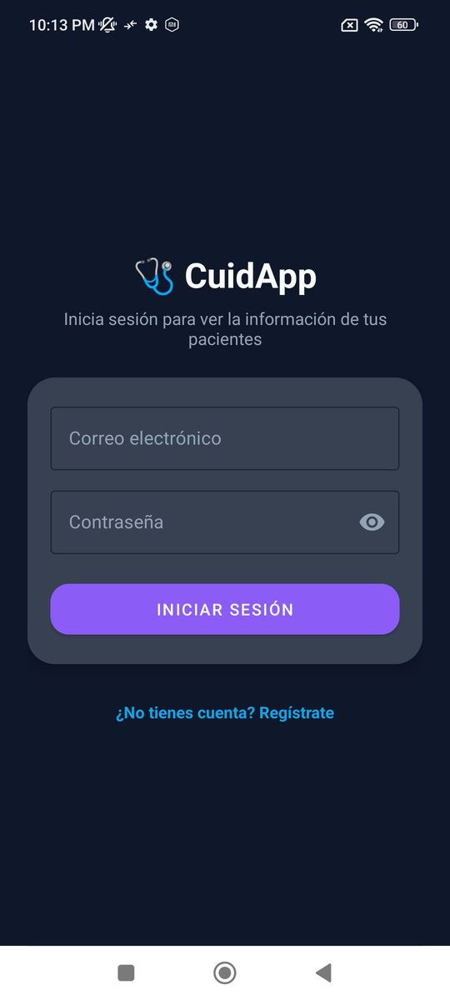
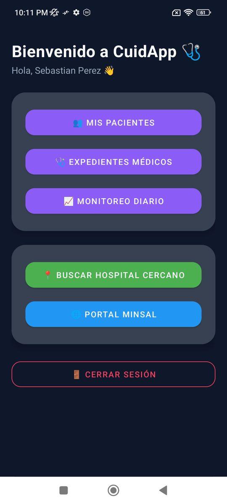
Guarda correo y contraseña con hash y entrega el UID.
Nombre, correo y fecha. Nunca la contraseña.
Cada paciente guarda el uid de su cuidador.
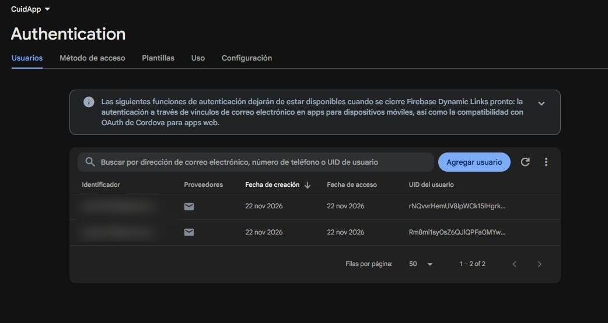
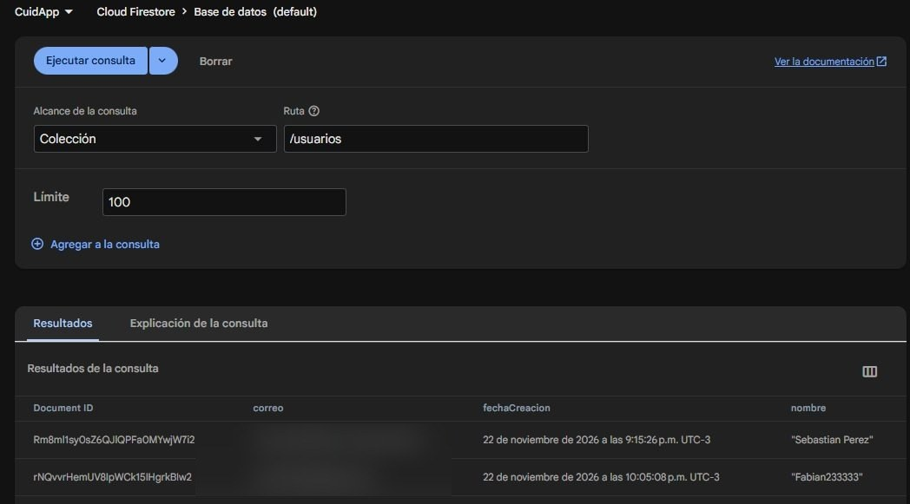
db.collection("pacientes") .whereEqualTo("uid", uid) .get();
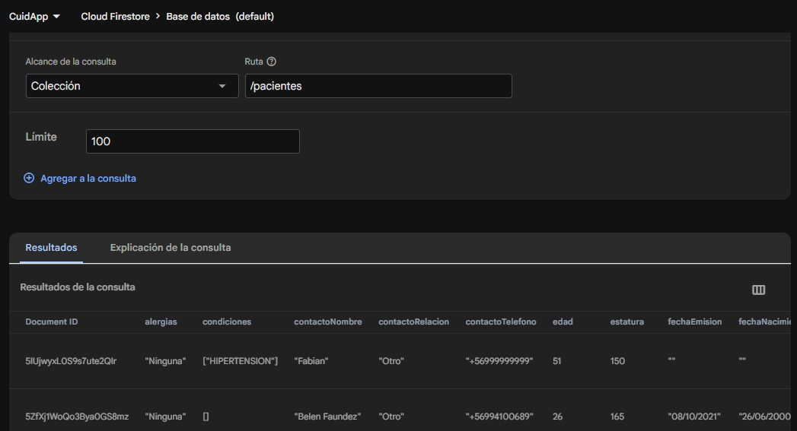
Formulario validado y mensaje «Paciente guardado».
.add(paciente)Lista de mis pacientes y ficha con todos los datos.
.whereEqualTo("uid", uid).get()El mismo formulario, cargado con los datos actuales.
.document(id).update(map)Pide confirmación y borra también sus registros.
WriteBatch → commit()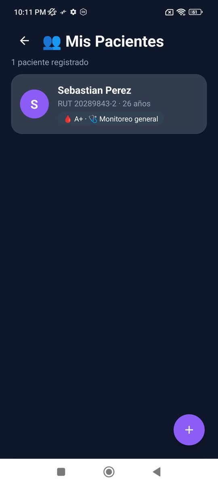
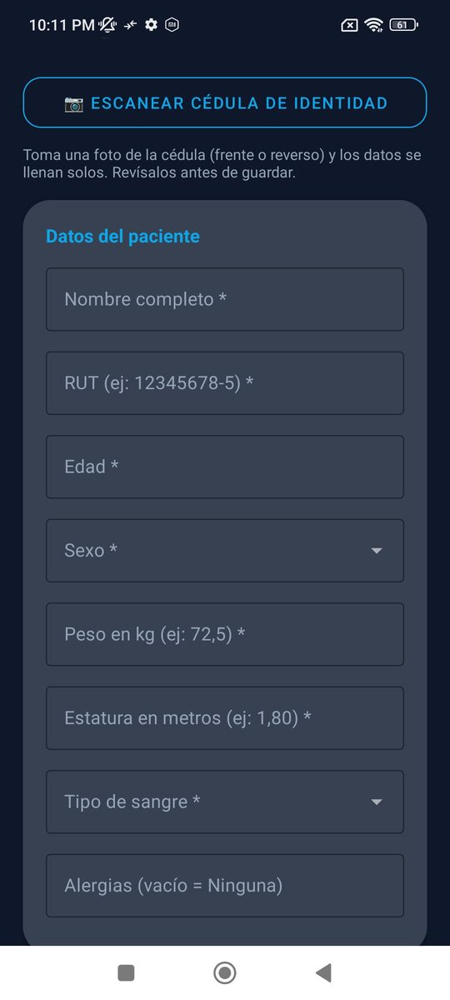
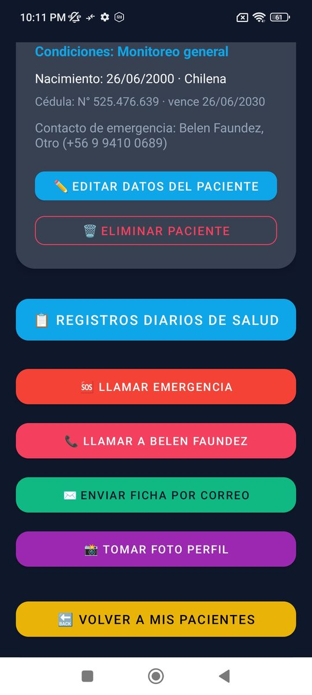
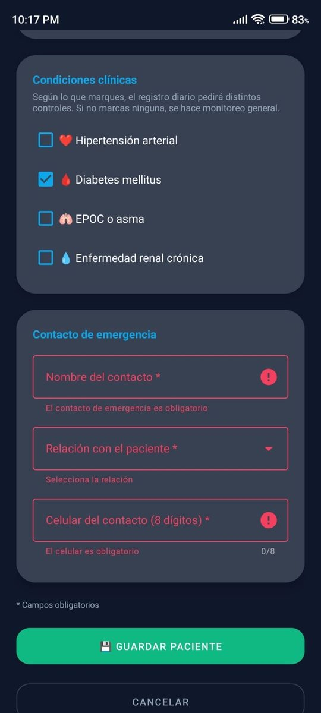
INCHL1234567891<<<<<<<<<<<<<<<
5006158F3006264CHL12345678<5<3
PEREZ<SOTO<<MARIA<JOSE<<<<<<<
Ejemplo ficticio de las 3 líneas que lee el parser.
Presión sistólica y diastólica, pulso
Glucemia, momento e insulina
Saturación, frecuencia respiratoria, peso y diuresis
Ruta: pacientes/{id}/registros/2026-11-25. Si un valor sale de rango se guarda una alerta, y el dashboard resume registros, medicación y alertas del día.
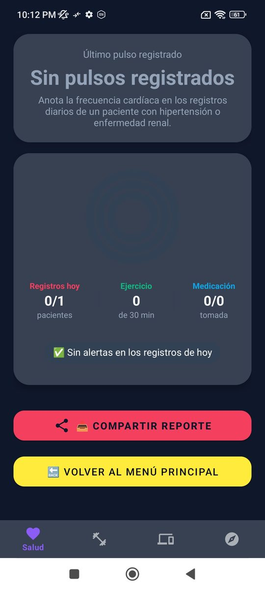
match /pacientes/{id} { allow get, update, delete: if request.auth != null && resource.data.uid == request.auth.uid; allow create: if request.resource.data.uid == request.auth.uid && pacienteValido(request.resource.data);}// registros: editar solo 24 hrequest.time < resource.data.creado + duration.value(24, 'h')
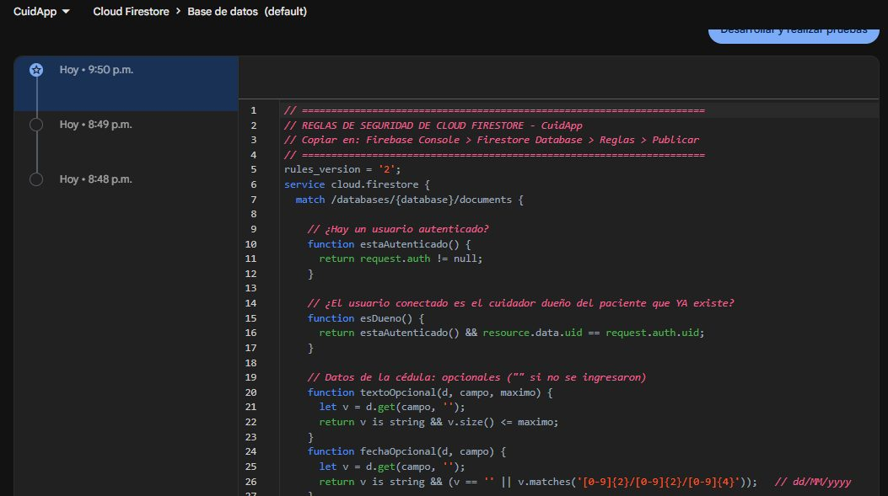
4 rutinas suaves con temporizador. Meta: 30 minutos al día.
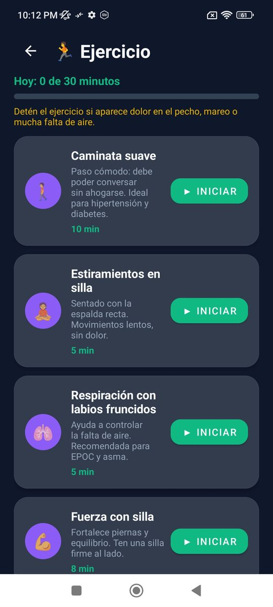
La versión web dentro de un WebView, con reintento sin internet.
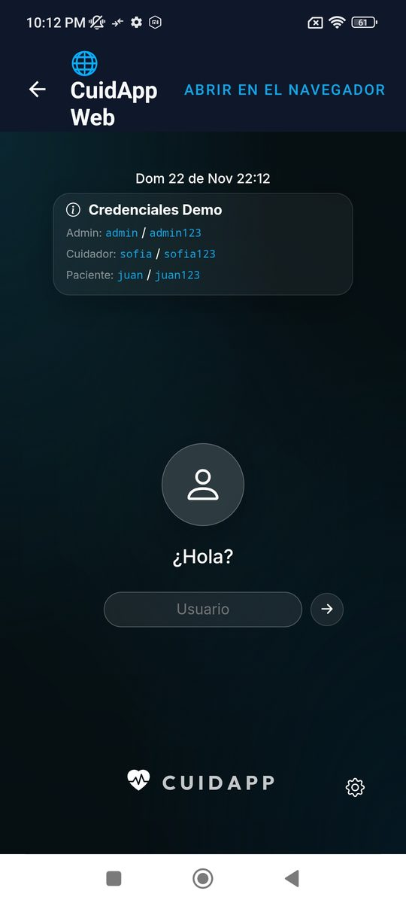
MINSAL, FONASA, SENAMA, ChileAtiende, ISP y Salud Responde.
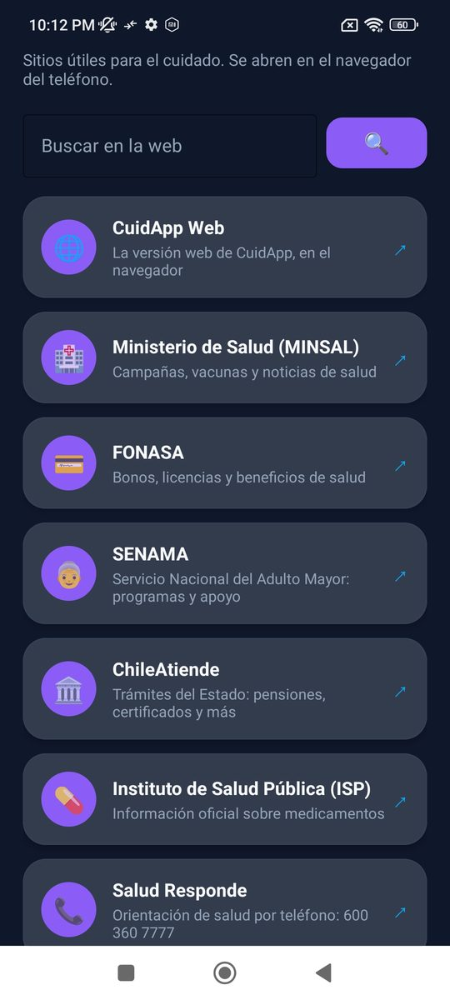
Gracias. ¿Preguntas?